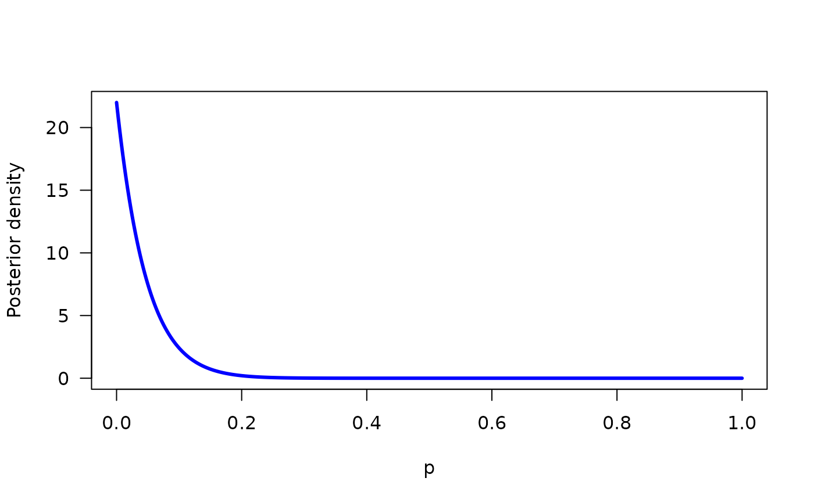

Bayesian analysis of one-sample binomial data using conjugate beta priors
binom_bayes.RdBayesian analysis of one-sample binomial data using conjugate beta priors
Usage
binom_bayes(
x,
n,
a = 1,
b = 1,
level = 0.95,
null,
plot = FALSE,
add = FALSE,
xlab = "p",
ylab = "Posterior density",
col = "blue",
...
)Arguments
- x
Number of "successes"
- n
Number of trials
- a
'alpha' parameter for beta prior. Default: uniform prior
- b
'beta' parameter for beta prior. Default: uniform prior
- level
For posterior interval; .95 for a 95% credible interval
- null
Point null to evaluate as a kind of hypothesis test
- plot
Draw a plot? Default: false
- add
Add to existing plot? Default: false
- xlab
xlab for plot
- ylab
ylab for plot
- col
color of density line for plot
- ...
Additional arguments to
plot()
Examples
binom_bayes(10, 16)
#> Sample proportion: 0.625
#> Posterior mean: 0.611
#> Posterior mode: 0.625
#> Posterior SD: 0.112
#> 95% central interval: (0.383, 0.816)
#> 95% HPD interval: (0.392, 0.823)
binom_bayes(0, 21, plot=TRUE)

#> Sample proportion: 0.000
#> Posterior mean: 0.043
#> Posterior mode: 0.000
#> Posterior SD: 0.042
#> 95% central interval: (0.001, 0.154)
#> 95% HPD interval: (0.000, 0.127)